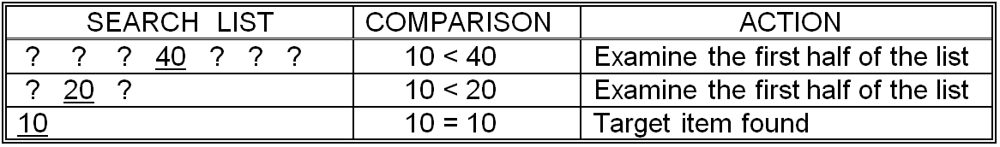
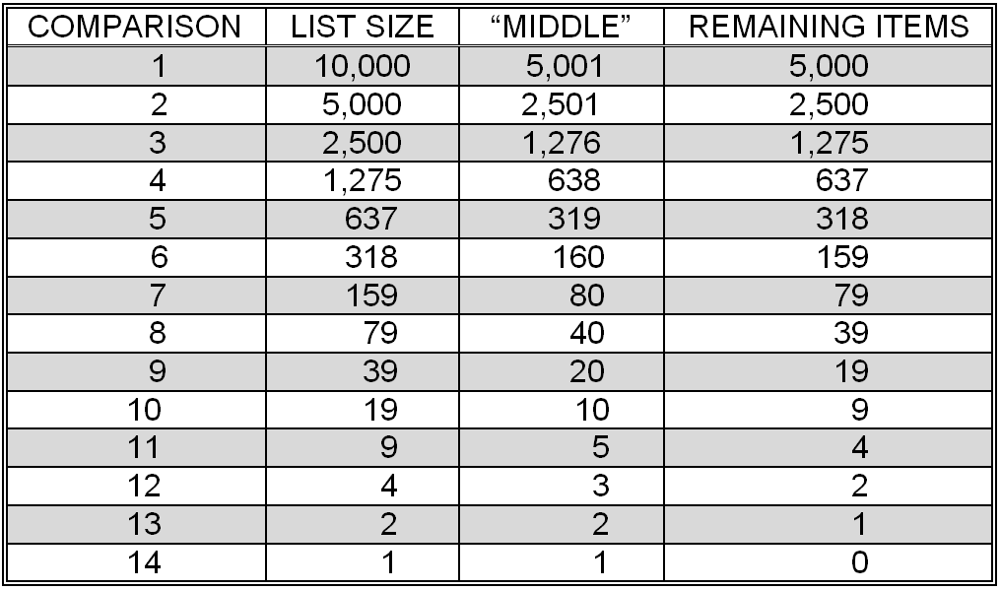

Binary search is another approach to the search problem. It is much more efficient than sequential search, but requires that the search list be presorted. Essentially, binary search begins by jumping to the midpoint of the search list and comparing the item it finds there to the target item it is searching for. Consider the result of this comparison. Clearly, if the target item is the same as the middle item, then the algorithm has found the item it was looking for and can print the “Yes, found it.” message and halt. Let’s say that the middle item is smaller than the target item. Since the search list was presorted, if the target item occurs anywhere in the list, it must be after the midpoint. Hence, the first half of the list – everything up to and including the middle item – can be safely discarded without an exhaustive examination of each of the items in that portion of the list. If the middle item had been larger than the target, then the target could only occur in the first half of the list. The second half of the list – the middle item and everything after it – could be dropped.
After performing this first step, the current list would be half the size of the original list. But, what should be done next? The answer is to repeat this process on the new list: select the middle item of the new list, compare it to the target item, and if it does not match discard half the items in that list. This process may be repeated until either: (1) the target item is found, or (2) the list of remaining items is empty. After the second step, if the target item is in the list but has not yet been found, its location will have been narrowed to a list that is ¼ the size of the original list. After three steps the list is only 1/8 the original size.
The binary search algorithm is presented formally in .
- 1. If the list is empty (has no items) then
- 1.1 Print “No, did not find it”
- 1.2 Halt (quit looking)
- 2. Let the current item be the item in the middle of the list
- 3. If the current item is the same as the target item then
- 3.1 Print “Yes, found it”
- 3.2 Halt (quit looking)
- 4. If the current item is larger than the target item then
- repeat this entire procedure on the first half of the list
- -- the items up to, but not including, the middle item
- 5. If the current item is smaller than the target item then
- repeat this entire procedure on the second half of the list
- -- the items following, but not including, the middle item
Binary search
Binary search depends on being able to quickly determine which item is in the middle of the list of remaining items. If the number of items in the list is odd, then there is a well-defined middle item. If the list is composed of an even number of items, then there is no item in the exact middle of the list. In this case, the very next item following the midpoint (which falls between items) is chosen as the “middle” item. The process of determining the position of the “middle” item in a list of N items can be expressed mathematically as:
position of middle item = ⌊N/2⌋+1
where ⌊⌋, read “floor”, means that fractions should be dropped. When N = 7, position 4 would be designated as the “middle” position.
- position of middle item = ⌊N/2⌋+1
- = ⌊7/2⌋+1
- = ⌊3.5⌋+1
- = 3 + 1
- = 4
With an N of 8, position 5 would be designated as the “middle” position.
- position of middle item = ⌊N/2⌋+1
- = ⌊8/2⌋+1
- = ⌊4.0⌋+1
- = 4 + 1
- = 5
illustrates two examples of binary search on a seven item list – one successful, the other unsuccessful. Note that in either case, only three comparisons were required to determine whether the target item was in the original seven item list. In fact, no more than three comparisons will ever be needed in a binary search of a seven item list. A sequential search of a seven item list requires 3.5 comparisons, on average, for successful searches and 7 comparisons for unsuccessful searches.[3]
Of course, these numbers don’t tell the whole story. Before a comparison between the target item and a list item can be performed, the list item must be selected. In sequential search this amounted to simply selecting the next item in the list (adding one to the current position). As we saw in the previous paragraph, the process of selecting the “middle” item for binary search is more complicated. As one would expect, a computer will require more time to perform the “middle” item position calculation for binary search as compared to the next item position calculation for sequential search. So, in reality, binary search might actually take longer than sequential search on a list of seven items.
(a) Successful binary search for the value 10

(b) Unsuccessful binary search for the value 55
Two examples of binary search
The true advantage of binary search over sequential search can really only be seen on large problem sizes. shows that at most only 14 comparisons would be necessary to perform a binary search of a 10,000 item list. This is a worst case result – at every point the target item is assumed not to match the current “middle” item. Also, whenever the two “halves” of the list were not exactly the same size (remember, they can differ by one item), the larger portion was selected.
So, how does binary search compare to sequential search? As stated earlier, a sequential search of a 10,000 item list requires, on average 5,000 comparisons to find an item that is in the list, and 10,000 comparisons to determine that an item is not present in the list. A binary search of 10,000 items requires at most 14 comparisons. Thus, in terms of the number of comparisons, binary search is much more efficient than sequential search. However, in order to use the binary search approach, the items must be presorted.
The actual amount of time required by any search algorithm depends on both the number of comparisons it performs and the amount of time needed to perform each comparison. A comparison operation in binary search may take longer than a comparison operation in sequential search since the location of the middle item must be determined. For the purpose of discussion, let’s say that the process of selecting the middle item in binary search takes 100 times as long as finding the next item in sequential search. In reality, a binary search comparison does not take anywhere near that long, but in the following analysis – which will show binary search to be more efficient than sequential search – we want to err on the side of caution.
Number of comparisons in a binary search of a 10,000 item list (worst case)
We are purposefully “handicapping” binary search, so that when our analysis is complete no one can claim that we “cooked the books” to make binary search look better than it really is by failing to take into account the overhead involved with finding the middle item. These kinds of “conservative” assumptions are often made when analyzing the efficiency of a proposed algorithm.
Assuming binary search comparisons take 100 times as long as sequential search comparisons, a single comparison would require 1/10 of a second – if we used the same “antique” computer that was employed in our analysis of sequential search. This is 100 times longer than the 1/1,000 second required for each comparison in sequential search. Given that at most 14 binary search comparisons are required to search 10,000 items, the search will take no more than 1.4 seconds on this computer, compared to an average of 5 seconds for a successful sequential search and 10 seconds for an unsuccessful search.
When we consider larger lists, such as a search through 300 million social security records, the performance of binary search becomes even more impressive. Earlier, we computed that sequential search would require about 42 hours to retrieve a social security record, given a valid social security number, and over 83 hours (3 ½ days) to determine that an input number was not valid – assuming one comparison every 1/1,000 of a second. Binary search could perform the same search in under 3 seconds – assuming one comparison every 1/10 of a second. This amazing result follows from the fact that each comparison eliminates one half of the items that remain to be searched. Thus, even with the “handicap” of making comparisons take 100 times longer in binary searches than in sequential searches, the superiority of binary search on large lists is still readily apparent.

A comparison of the predicted runtimes of sequential and binary search
The maximum number of comparisons required to perform a binary search of N items can be expressed mathematically as:
Maximum number of binary search comparisons = ⌈log2(N+1)⌉
where ⌈⌉, read “ceiling”, means that fractions should be increased to the next highest whole number, and log2(N+1) is the power that 2 must be raised to in order to equal (N+1). You should convince yourself that this formula is correct by working through the binary search algorithm on a number of small examples in order to establish how many comparisons are actually needed, and then check that number with the formula. Note that the formula even works in the case of a list with zero items.
Using this equation, it is possible to predict that a binary search of a 1,000 item list will require, at most 10 comparisons. This is because log2(1,001) is nine point something [210 = 1,024 making log2(1,024) = 10], and the ceiling function raises this result to the next highest whole number, 10. Similarly, a list that is 40 items long will require, at most 6 comparisons, because log2 (41) is five point something [2 5 = 32 and 2 6 = 64].
contains a graphical comparison of the runtimes of sequential search and binary search, given the assumptions concerning comparison times discussed above. The runtime of sequential search appears as a straight line with a constant slope. For this reason, sequential search is known as a linear algorithm. Binary search appears as a curve with a slope that grows ever more shallow with increasing problem size, and is known as a logarithmic algorithm. In general, logarithmic algorithms are preferred over linear algorithms, since they tend to run faster on large problems.
In spite of the fact that we assumed a comparison would require 100 times as long in binary search as in sequential search, the binary search algorithm is still clearly more efficient for searching large lists. One way of understanding why this is true is to realize that the size of the list must double before binary search performs a single additional comparison. For sequential search, adding one additional item to the input list will, in the worst case, require an additional comparison – and, on average, add 1/2 comparison for successful searches. So, as problem size increases, the initial advantage that sequential search had due to its faster comparison time is quickly overcome by the smaller number of comparisons required by binary search.
Under the assumptions of , binary search becomes faster than sequential search on lists that contain about 2,500 or more items. Under different assumptions, the point at which binary search becomes faster than sequential search would shift. For example, if we assumed that binary search comparisons were ten times slower than sequential search comparisons, binary search would become faster than sequential search on lists that contained more than 160 items.[4]
Finally, it is important to note, once again, that binary searches can only be performed on lists that are already sorted. Given an unsorted list, it is necessary to first sort the list before beginning the binary search procedure. This observation leads us to our next topic of discussion: the sorting problem and algorithms for its solution.
Exercises for
- In a manner similar to , illustrate the behavior of a binary search for the value 75 in the list: 25 30 35 40 45 50 55 60 65 70 75 80 85 90 95
- Show that the actual number of comparisons required by the binary search in the previous problem exactly matches the maximum number of comparisons predicted by the equation for binary search.
- Using the same list given in problem 1, supply a target value (a value to be searched for) that could be found by binary search using less than the maximum number of comparisons predicted for this list. What is the exact number of comparisons needed to find the target you supplied?
- What is the maximum number of comparisons needed to perform a binary search of a 63 item list? An 80 item list?
- What is the largest list that can be searched by the binary search method given 15 or fewer comparisons?
- Given the assumptions concerning the time to perform a comparison in sequential (1/1,000 second) and binary (1/10 second) search, which technique should be used to search a 1,000 item list? A 2,000 item list? A 10,000 item list?
Footnotes
[3] It is, of course, impossible to perform 3.5 comparison operations, or any other non whole number of comparisons. However, when computing an average, fractions are often produced.
[4] Assuming binary search comparisons are ten times slower than sequential search comparisons, while much more realistic than assuming they are 100 times slower, is still quite generous.